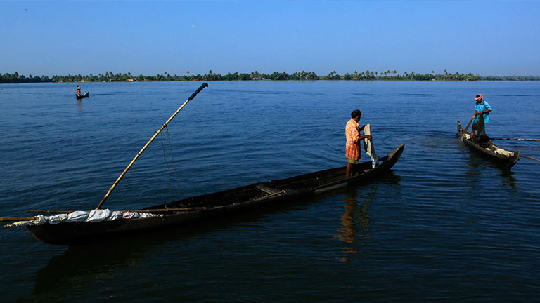

Thangasheri
A ruined fort located in Kollam on the shores of the Arabian Sea is the Thangassery Fort or St. Thomas Fort. The lighthouse of Thangassery allures tourists from far and wide with its rustic charm. This cylindrical lighthouse tower coloured in white and red oblique bands with a height of 41 metres (135 ft) is the 2nd tallest lighthouse on the Kerala Coast.
Thangassery is a historically significant place and it still has the remnants of an ancient coastal defence hub built by the Portuguese, the St. Thomas Fort, a Portuguese cemetery, a canal, the ancient Port of Kollam and the Infant Jesus Cathedral.
.jpg)
Thenmala
All those who feel like having some adventure, fun and a close interaction with nature, take the road to Thenmala.
Thenmala Ecotourism is a perfect spot in which to spend your holidays as it offers a host of attractions that will leave you
with a heart full of joy and bliss. Situated amidst the riveting woods of the Shendurney Wildlife Sanctuary, this picturesque land owns a lush green forest park,
Adventure Park, Deer rehabilitation centre, children’s park, musical dancing fountain and many more recreation points.
It also offers several recreational bounties such as butterfly safari, boating, trekking, hiking and night camping
facilities as well.

Ashtamudi Backwaters
Ashtamudi Lake, the gateway to the backwaters of Kerala gives you one of the best backwater experiences ever. This 61 km long lake finds its way into the sea through the Neendakara estuary. Being the second largest Lake in Kerala, Ashtamudi with its lush flora and rich biodiversity bestows you a laid back cruise through the tranquil backwaters to rejuvenate the soul.
Go for a journey through the backwaters of Kollam to refresh yourself with the visual extravaganza that the Ashtamudi has to offer. The eight channels of the Lake gave it its name- Ashtamudi.